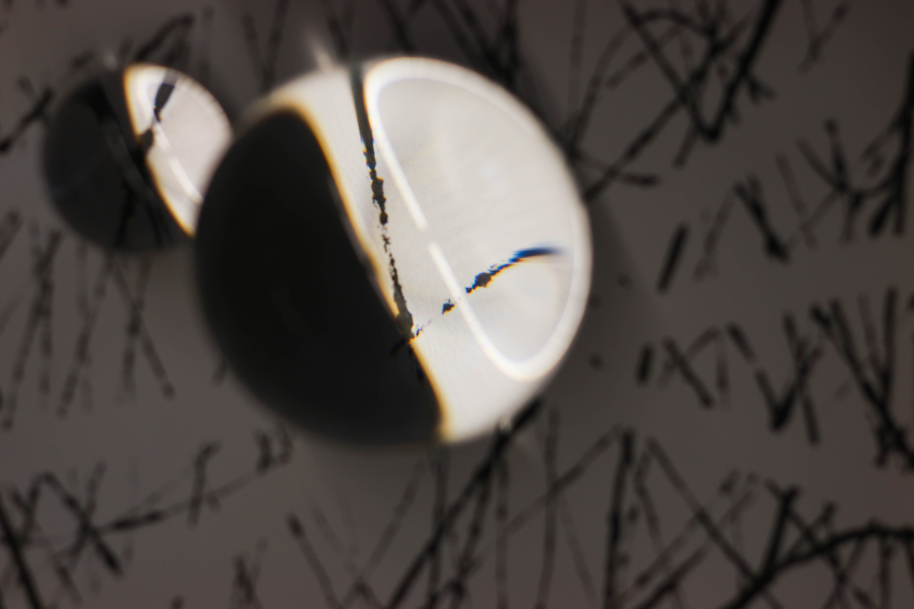
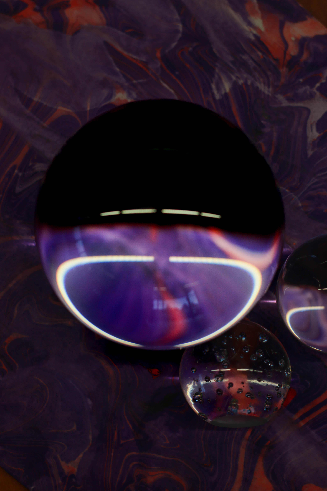

Home
Photo Safari
Composition
About Me
Macro Light
Macro Light

Exploring Details
f/2.8 | 1/250s | ISO 100

Light & Shadow
f/4 | 1/125s | ISO 200
Texture Studies
f/5.6 | 1/60s | ISO 400
Natural Beauty
f/3.5 | 1/200s | ISO 160